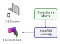
What we call dissimilarity metric-based Channel Charting is a very structured way to perform Channel Charting on a measured dataset. The basic idea is that we will compute pseudo-distances that we call dissimilarities between pairs of datapoints in the dataset. We will discuss later how exactly that works, but basically, you can extract information about distances either from metadata (like timestamps) or directly from CSI - in this tutorial, we will combine ("fuse") both sources of information. These distances are then collected in a large matrix that we call the dissimilarity matrix.
Next, classical or deep learning-based manifold learning techniques are applied to learn a low-dimensional representation. In contrast to other Channel Charting techniques (e.g., our timestamp/triplet-based tutorial), we don't really need a neural network, but using one has some advantages over classical methods (more on that later).
For this tutorial, we use the dichasus-cf0x dataset collected by DICHASUS.
This dataset contains CSI for \(BM = 32\) receive antennas (\( B=4 \) antenna arrays with \( M = 8 \) antennas per array) and for \( N_\mathrm{sub} = 1024 \) OFDM subcarriers at \( L \) different transmitter positions ("datapoints").
The transmitter is mounted on top of a robot, which follows some trajectory through the measurement area.
The CSI at a particular time instant can be expressed as a matrix \(\mathbf H^{(l)} \in \mathbb C^{BM \times N_\mathrm{sub}}\).
Hence, the dataset consists of datapoints that are 3-tuples of channel coefficients \( \mathbf{H}^{(l)} \in \mathbb C^{BM \times N_\mathrm{sub}} \), ground truth positions \( \mathbf{x}^{(l)} \in \mathbb{R}^D \) and timestamps \( t^{(l)} \in \mathbb R \):
\[
\text{Dataset:} \quad \left\{ (\mathbf{H}^{(l)}, \mathbf x^{(l)}, t^{(l)}) \right\}_{l = 1, \ldots, L}
\]
The ground truth positions (which are really only for evaluation purposes, they are not used for training!) are measured with a tachymeter robotic total station, a very precise instrument that tracks the robot's antenna with a laser with at least centimeter-level accuracy.
DICHASUS uses a reference transmitter for synchronization, which entails that measured phases may exhibit constant offsets caused by the specific channel between reference transmitter and receive antenna.
Luckily, we computed these offsets for each DICHASUS dataset and made them available for download.
The datasets themselves are provided in the TFRecords file format, which makes loading them with TensorFlow particularly simple.
Obviously, the more training data we have, the better the channel chart gets.
To save some disk and RAM space, we will settle for just 3 robot round trips in the following: dichasus-cf02.tfrecords, dichasus-cf03.tfrecords and dichasus-cf04.tfrecords:
!mkdir dichasus
!wget -nc --content-disposition https://darus.uni-stuttgart.de/api/access/datafile/:persistentId?persistentId=doi:10.18419/darus-2854/8 -P dichasus # dichasus-cf02
!wget -nc --content-disposition https://darus.uni-stuttgart.de/api/access/datafile/:persistentId?persistentId=doi:10.18419/darus-2854/9 -P dichasus # dichasus-cf03
!wget -nc --content-disposition https://darus.uni-stuttgart.de/api/access/datafile/:persistentId?persistentId=doi:10.18419/darus-2854/10 -P dichasus # dichasus-cf04
!wget -nc https://dichasus.inue.uni-stuttgart.de/datasets/data/dichasus-cf0x/reftx-offsets-dichasus-cf02.json -P dichasus
!wget -nc https://dichasus.inue.uni-stuttgart.de/datasets/data/dichasus-cf0x/reftx-offsets-dichasus-cf03.json -P dichasus
!wget -nc https://dichasus.inue.uni-stuttgart.de/datasets/data/dichasus-cf0x/reftx-offsets-dichasus-cf04.json -P dichasusNext, we load the TFRecords files with TensorFlow:
from sklearn.neighbors import NearestNeighbors, kneighbors_graph
from scipy.sparse.csgraph import dijkstra
from scipy.spatial import distance_matrix
from sklearn.manifold import MDS
import matplotlib.pyplot as plt
import multiprocessing as mp
import tensorflow as tf
import numpy as np
import progressbar
import queue
import json
# Antenna definitions
ASSIGNMENTS = [
[0, 13, 31, 29, 3, 7, 1, 12 ],
[30, 26, 21, 25, 24, 8, 22, 15],
[28, 5, 10, 14, 6, 2, 16, 18],
[19, 4, 23, 17, 20, 11, 9, 27]
]
ANTENNACOUNT = np.sum([len(antennaArray) for antennaArray in ASSIGNMENTS])
def load_calibrate_timedomain(path, offset_path):
offsets = None
with open(offset_path, "r") as offsetfile:
offsets = json.load(offsetfile)
def record_parse_function(proto):
record = tf.io.parse_single_example(
proto,
{
"csi": tf.io.FixedLenFeature([], tf.string, default_value=""),
"pos-tachy": tf.io.FixedLenFeature([], tf.string, default_value=""),
"time": tf.io.FixedLenFeature([], tf.float32, default_value=0),
},
)
csi = tf.ensure_shape(tf.io.parse_tensor(record["csi"], out_type=tf.float32), (ANTENNACOUNT, 1024, 2))
csi = tf.complex(csi[:, :, 0], csi[:, :, 1])
csi = tf.signal.fftshift(csi, axes=1)
position = tf.ensure_shape(tf.io.parse_tensor(record["pos-tachy"], out_type=tf.float64), (3))
time = tf.ensure_shape(record["time"], ())
return csi, position[:2], time
def apply_calibration(csi, pos, time):
sto_offset = tf.tensordot(tf.constant(offsets["sto"]), 2 * np.pi * tf.range(tf.shape(csi)[1], dtype = np.float32) / tf.cast(tf.shape(csi)[1], np.float32), axes = 0)
cpo_offset = tf.tensordot(tf.constant(offsets["cpo"]), tf.ones(tf.shape(csi)[1], dtype = np.float32), axes = 0)
csi = tf.multiply(csi, tf.exp(tf.complex(0.0, sto_offset + cpo_offset)))
return csi, pos, time
def csi_time_domain(csi, pos, time):
csi = tf.signal.fftshift(tf.signal.ifft(tf.signal.fftshift(csi, axes=1)),axes=1)
return csi, pos, time
def cut_out_taps(tap_start, tap_stop):
def cut_out_taps_func(csi, pos, time):
return csi[:,tap_start:tap_stop], pos, time
return cut_out_taps_func
def order_by_antenna_assignments(csi, pos, time):
csi = tf.stack([tf.gather(csi, antenna_inidces) for antenna_inidces in ASSIGNMENTS])
return csi, pos, time
dataset = tf.data.TFRecordDataset(path)
dataset = dataset.map(record_parse_function, num_parallel_calls = tf.data.AUTOTUNE)
dataset = dataset.map(apply_calibration, num_parallel_calls = tf.data.AUTOTUNE)
dataset = dataset.map(csi_time_domain, num_parallel_calls = tf.data.AUTOTUNE)
dataset = dataset.map(cut_out_taps(507, 520), num_parallel_calls = tf.data.AUTOTUNE)
dataset = dataset.map(order_by_antenna_assignments, num_parallel_calls = tf.data.AUTOTUNE)
return dataset
inputpaths = [
{
"tfrecords" : "dichasus/dichasus-cf02.tfrecords",
"offsets" : "dichasus/reftx-offsets-dichasus-cf02.json"
},
{
"tfrecords" : "dichasus/dichasus-cf03.tfrecords",
"offsets" : "dichasus/reftx-offsets-dichasus-cf03.json"
},
{
"tfrecords" : "dichasus/dichasus-cf04.tfrecords",
"offsets" : "dichasus/reftx-offsets-dichasus-cf04.json"
}
]
full_dataset = load_calibrate_timedomain(inputpaths[0]["tfrecords"], inputpaths[0]["offsets"])
for path in inputpaths[1:]:
full_dataset = full_dataset.concatenate(load_calibrate_timedomain(path["tfrecords"], path["offsets"]))
There is quite a lot to unwrap in that dataset loading code, so here is a short summary:
We load all three TFRecord files (dichasus-cf02, dichasus-cf03, dichasus-cf04), and each of them goes through a pipeline of processing steps:
record_parse_function reads the raw .tfrecord file and extracts raw frequency-domain CSI, "ground truth" position information and timestamps.
Afterwards, the complex-valued tensor csi should have shape (32, 1024), where \( BM = 32 \) is the number of antennas and \( N_\mathrm{sub} = 1024 \) is the number of subcarriers.
Each entry corresponds to the channel coefficient of one particular OFDM subchannel.
apply_calibration to correct time and phase errors as explained in the calibration tutorial.csi_time_domain computes the inverse fast fourier transform (IFFT) of the frequency-domain CSI (over the subcarrier axis) so that the variable csi now contains complex-valued time domain channel impulse responses of length 1024 taps.cut_out_taps extracts time-domain taps \( \tau_\mathrm{min} = 507 \) to \( \tau_\mathrm{max} = 520 \), which should contain the line of sight signal as well as most relevant reflections and discards the rest.
The csi tensor now has shape (32, 13), i.e., we have 13 taps for each of the 32 antennas in the setup.
order_by_antenna_assignments adds another dimension to the shape of the csi tensor such that measurements are grouped by antenna array.
It returns a csi tensor with shape (4, 8, 13), where \( B = 4 \) corresponds to the number of antenna arrays, \( M = 8 \) is the number of antennas per array and \( \tau_\mathrm{max} - \tau_\mathrm{min} = 13 \) is still the number of time-domain taps.
At the output of the processing pipeline, we get time-domain CSI tensors \( \mathbf { \hat H^{(l)} } \in \mathbb C^{B \times M \times (\tau_\mathrm{max} - \tau_\mathrm{min})} \). In all subsequent steps, we will work with these time-domain tensors. The superscript \( l \) of \( \mathbf { \hat H^{(l)} } \) indicates the datapoint, and we will use comma-separated subscripts for indexing.
To reduce the number of datapoints (and hence, RAM usage and processing time), we will only use every 4th datapoint:# Decimate dataset: Use only every 4th datapoint (to reduce number of points)
training_set = full_dataset.enumerate().filter(lambda idx, value : (idx % 4 == 0))
training_set = training_set.map(lambda idx, value : value)groundtruth_positions = []
csi_time_domain = []
timestamps = []
for csi, pos, time in training_set.batch(1000):
csi_time_domain.append(csi.numpy())
groundtruth_positions.append(pos.numpy())
timestamps.append(time.numpy())
csi_time_domain = np.concatenate(csi_time_domain)
groundtruth_positions = np.concatenate(groundtruth_positions)
timestamps = np.concatenate(timestamps)plot_colorized function to plot the ground truth positions in a top view diagram.
The function produces a scatter plot, where each point in the scatter plot is assigned a color according to its ground truth position.
We can later reuse this function to plot the channel chart with the same colorization.
def plot_colorized(positions, groundtruth_positions, title = None, show = True, alpha = 1.0):
# Generate RGB colors for datapoints
center_point = np.zeros(2, dtype = np.float32)
center_point[0] = 0.5 * (np.min(groundtruth_positions[:, 0], axis = 0) + np.max(groundtruth_positions[:, 0], axis = 0))
center_point[1] = 0.5 * (np.min(groundtruth_positions[:, 1], axis = 0) + np.max(groundtruth_positions[:, 1], axis = 0))
NormalizeData = lambda in_data : (in_data - np.min(in_data)) / (np.max(in_data) - np.min(in_data))
rgb_values = np.zeros((groundtruth_positions.shape[0], 3))
rgb_values[:, 0] = 1 - 0.9 * NormalizeData(groundtruth_positions[:, 0])
rgb_values[:, 1] = 0.8 * NormalizeData(np.square(np.linalg.norm(groundtruth_positions - center_point, axis=1)))
rgb_values[:, 2] = 0.9 * NormalizeData(groundtruth_positions[:, 1])
# Plot datapoints
plt.figure(figsize=(6, 6))
if title is not None:
plt.title(title, fontsize=16)
plt.scatter(positions[:, 0], positions[:, 1], c = rgb_values, alpha = alpha, s = 10, linewidths = 0)
plt.xlabel("x coordinate")
plt.ylabel("y coordinate")
if show:
plt.show()
plot_colorized(groundtruth_positions, groundtruth_positions, title="Ground Truth Positions")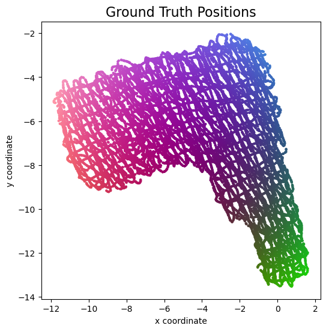
Brussels |
Paris |
Frankfurt |
Stuttgart |
Zürich |
|
|---|---|---|---|---|---|
| Brussels | 0 | 83 | 186 | ∞ | ∞ |
| Paris | 86 | 0 | 229 | 193 | 244 |
| Frankfurt | 189 | 238 | 0 | 77 | 233 |
| Stuttgart | ∞ | 190 | 78 | 0 | ∞ |
| Zürich | ∞ | 244 | 234 | ∞ | 0 |
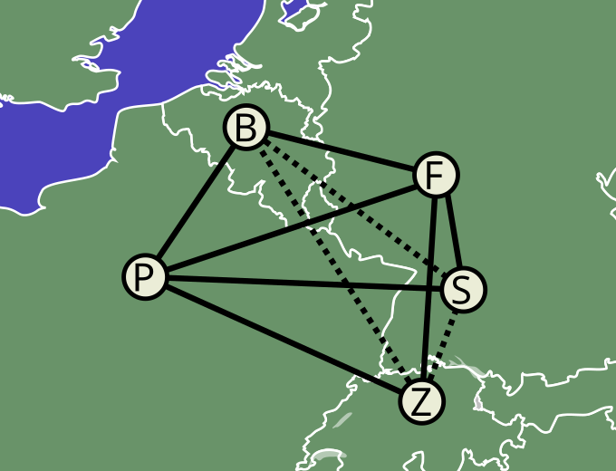
In mathematical terms, the set of cities we considered can be viewed as the nodes of a graph, and the travel times between the cities can be interpreted as the edges of a directed graph. In this interpretation, the table above is the adjacency matrix of this graph, and this is essentially what we call the dissimilarity matrix \( \mathbf D \) in Channel Charting. In general, the dissimilarity matrix has \( N^2 \) entries, where \( N \) is the number of datapoints and, hence, vertices in the graph.
There are some general observations to be made about the dissimilarity matrix:
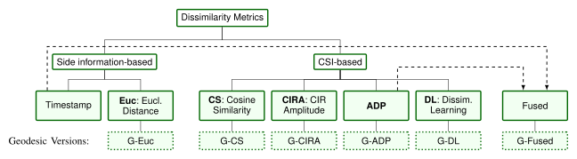
The picture above is taken from our paper on dissimilarity metric-based Channel Charting It provides an overview over some of the ways in which dissimilarities between datapoints may be computed. On one hand, there are side information-based methods, like taking into account timestamps of measurements or by using some sort of ground truth information, where it is available (we would consider the latter to be cheating, we want a fully self-supervised system). On the other hand, there are CSI-based methods, which exploit some expert knowledge on wave propagation and the format of CSI to compute dissimilarities. The diagram above only lists a few of them, namely a cosine similarity-based metric, a channel impulse response (CIR) amplitude-based metric and a (our own) angle delay profile (ADP)-based metric. Then, there are also what we call fused metrics, where we combine one or multiple metrics into a better one. And finally, we can transform any matrix into a geodesic version of the matrix, which will be explained later.
In the following, we will use these steps to compute a dissimilarity matrix:
Intuitively, the "angle-delay profile" of a wireless channel describes how much power of a transmitted signal arrives at the base station at what time (delay) and from what angle of arrival (AoA).
There are different ways to check if two signals come from the same AoA: We could use a superresolution method like MUSIC for AoA estimation and then compare the angles. MUSIC, however, is computationally rather expensive and for large dissimilarity matrices, we need to compute lots of dissimilarity metrics. Also, we didn't get very convincing results with MUSIC, so we will use a faster and simpler method instead.
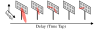
In fact, we can check if two signals come from a similar AoA by just computing the cosine similarity between their channel vectors (i.e., the vectors continaing the channel coefficients of all antennas). Here, we compute the cosine similarity between to datapoints \( i \) and \( j \) for a single time tap \( \tau \) and a single antenna array \( b \): \[ \text{CS} = \frac{\left\lvert \sum_{m=1}^{M} \left(\tilde {\mathbf H}_{b, m, \tau}^{(i)}\right)^* \tilde {\mathbf H}_{b, m, \tau}^{(j)}\right\rvert^2} { \left(\sum_{m=1}^{M}\left\lvert \tilde {\mathbf H}_{b, m, \tau}^{(i)}\right\rvert^2 \right) \left(\sum_{m=1}^{M} \left\lvert \tilde {\mathbf H}_{b, m, \tau}^{(j)}\right\rvert^2\right)} \] The cosine similarity is 1 if both channel vectors are identical (except for phase shifts and power scalings), and smaller cosine similarities indicate that the two AoAs are more dissimilar.
To get a good dissimilarity measure for channel charting, we sum the time-domain cosine similarities over all time taps \( \tau = 1, \ldots, \tau_\mathrm{max} - \tau_\mathrm{min} \) and all distributed antenna arrays \( b = 1, \ldots, B \). Also, we need to invert the cosine similarity value, such that higher values indicate a greater dissimilarity, hence the "\( 1- \)" in the following formula for the ADP dissimilarity: \[ \mathbf D_{\mathrm{ADP}, i, j} = \sum_{b=1}^B \sum_{\tau=1}^{\tau_\mathrm{max} - \tau_\mathrm{min}} \left( 1 - \frac{\left\lvert \sum_{m=1}^{M} \left(\tilde {\mathbf H}_{b, m, \tau}^{(i)}\right)^* \tilde {\mathbf H}_{b, m, \tau}^{(j)}\right\rvert^2} { \left(\sum_{m=1}^{M}\left\lvert \tilde {\mathbf H}_{b, m, \tau}^{(i)}\right\rvert^2 \right) \left(\sum_{m=1}^{M} \left\lvert \tilde {\mathbf H}_{b, m, \tau}^{(j)}\right\rvert^2\right)} \right) \]
In terms of the practical implementation of this equation, we will use NumPy's einsum to compute the cosine similarities row-wise.
You may also notice that we can compute the entries of the matrix \( \mathbf D_\mathrm{ADP} \) independently from one another, which means that the computation can be parallelized.
We will use Python's multiprocessing for that.
Finally, we make use of the fact that the dissimilarity matrix is symmetric and only compute half of the entries.
This makes the following code which computes \( \mathbf D_\mathrm{ADP} \) (here called adp_dissimilarity_matrix) really fast:
adp_dissimilarity_matrix = np.zeros((csi_time_domain.shape[0], csi_time_domain.shape[0]),dtype=np.float32)
def adp_dissimilarities_worker(todo_queue, output_queue):
def adp_dissimilarities(index):
cosine_similarities = np.zeros((np.shape(csi_time_domain)[0] - index, np.shape(csi_time_domain)[1], np.shape(csi_time_domain)[2]))
# h has shape (arrays, antennas, taps), w has shape (datapoints, arrays, antennas, taps)
h = csi_time_domain[index,:,:,:]
w = csi_time_domain[index:,:,:,:]
dotproducts = np.abs(np.einsum("bmt,lbmt->lbt", np.conj(h), w, optimize = "optimal"))**2
norms = np.real(np.einsum("bmt,bmt->bt", h, np.conj(h), optimize = "optimal") * np.einsum("lbmt,lbmt->lbt", w, np.conj(w), optimize = "optimal"))
return np.sum(1 - dotproducts / norms, axis = (1, 2))
while True:
index = todo_queue.get()
if index == -1:
output_queue.put((-1, None))
break
output_queue.put((index, adp_dissimilarities(index)))
count = 0
with progressbar.ProgressBar(max_value = csi_time_domain.shape[0]**2) as bar:
todo_queue = mp.Queue()
output_queue = mp.Queue()
for i in range(csi_time_domain.shape[0]):
todo_queue.put(i)
for i in range(mp.cpu_count()):
todo_queue.put(-1)
p = mp.Process(target = adp_dissimilarities_worker, args = (todo_queue, output_queue))
p.start()
finished_processes = 0
while finished_processes != mp.cpu_count():
i, d = output_queue.get()
if i == -1:
finished_processes = finished_processes + 1
else:
adp_dissimilarity_matrix[i,i:] = d
adp_dissimilarity_matrix[i:,i] = d
count = count + 2 * len(d) - 1
bar.update(count)timestamp_dissimilarity_matrix:
# Compute timestamp-based dissimilarity matrix
timestamp_dissimilarity_matrix = np.abs(np.subtract.outer(timestamps, timestamps))TIME_THRESHOLD = 2
small_time_dissimilarity_indices = np.logical_and(timestamp_dissimilarity_matrix < TIME_THRESHOLD, timestamp_dissimilarity_matrix > 0)
small_time_dissimilarities = timestamp_dissimilarity_matrix[small_time_dissimilarity_indices]
small_adp_dissimilarities = adp_dissimilarity_matrix[small_time_dissimilarity_indices]
n_bins = 1500
fig, ax1 = plt.subplots()
occurences, edges, patches = ax1.hist(small_adp_dissimilarities / small_time_dissimilarities, range = (0, 50), bins = n_bins)
ax1.set_xlabel("$D_\mathrm{APDP} / D_\mathrm{time}$")
ax1.set_ylabel("Number of Occurences")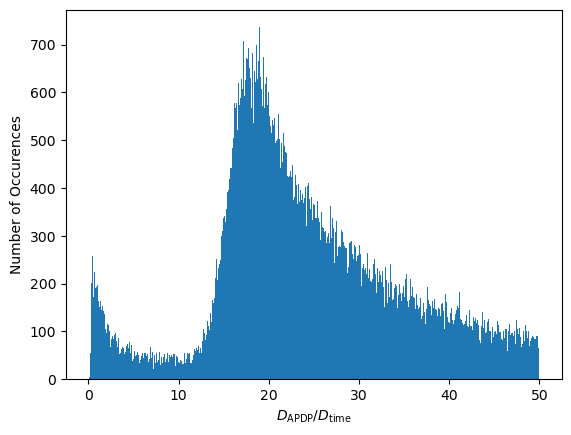
Interesting... There appear to be two distinct modes in this distribution. These modes can be attributed to behaviors of the transmitter:
This motivates a simple dissimilarity matrix fusing algorithm:
For separating the two modes, we could use some kind of thresholding algorithm. In the Python code, we will use a very primitive approach which finds the leftmost point of the right mode:
bin_centers = edges[:-1] + np.diff(edges) / 2.
max_bin = np.argmax(occurences)
min_threshold = np.quantile(occurences[:max_bin], 0.5)
for threshold_bin in range(max_bin - 1, -1, -1):
if occurences[threshold_bin] < min_threshold:
break
scaling_factor = bin_centers[threshold_bin]
plt.bar(bin_centers[:max_bin], occurences[:max_bin], width = edges[1] - edges[0])
plt.axhline(y = min_threshold, color = 'r', linestyle = '-')
plt.text(4, min_threshold + 10, "Mode Separation Threshold", color = 'r',)
plt.axvline(x = scaling_factor, color = 'r', linestyle = '-')
plt.xlabel("$D_\mathrm{APDP} / D_\mathrm{time}$")
plt.ylabel("Number of Occurences")
plt.show()
print("gamma = ", scaling_factor)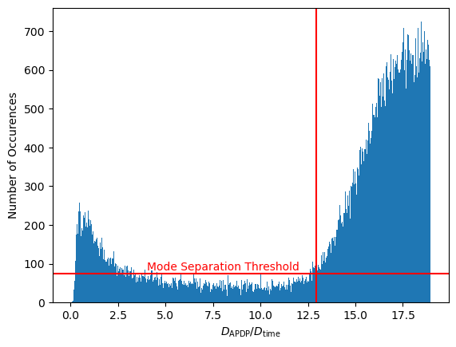
gamma = 12.916666507720947Finally, we can fuse the two dissimilarity matrices:
# Fuse ADP-based and time-based dissimilarity matrices
dissimilarity_matrix_fused = np.minimum(adp_dissimilarity_matrix, timestamp_dissimilarity_matrix * scaling_factor)Admittedly, this kind of heuristic is very much dataset-dependent. In a different dataset, we might have a mix of transmitters (stationary, pedestrian, car) moving at different speeds. In that case we would need a more advanced heuristic that, for example, estimates the transmitter-specific speed based on CSI data, or we might want to use an entirely different fusing approach. In some cases, we might want to use a nonlinear scaling to match the two dissimilarity metrics, or we might want to choose the more accurate dissimilarity not just based on which entry is smaller.
The importance of using geodesic dissimilarities was highlighted in a paper by a group at Fraunhofer IIS. In our exemplary dissimilarity matrix of train travel times above, we were unable to tell how much time it would take to get from Stuttgart to Brussels, since there is no direct train connection between these two cities. However, we can get an estimate for the required travel time (ignoring transfer time), by summing up the time it takes to go from Stuttgart to Frankfurt and the time it takes to travel from Frankfurt to Brussels. Why don't we go from Stuttgart to Brussel's via Paris? Well, because, according to our travel times, the route via Frankfurt is shorter: To figure out the missing dissimilarity, we applied a shortest path algorithm.
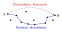
n_neighbors = 20
nbrs_alg = NearestNeighbors(n_neighbors = n_neighbors, metric="precomputed", n_jobs = -1)
nbrs = nbrs_alg.fit(dissimilarity_matrix_fused)
nbg = kneighbors_graph(nbrs, n_neighbors, metric = "precomputed", mode="distance")dissimilarity_matrix_geodesic = np.zeros((nbg.shape[0], nbg.shape[1]), dtype = np.float32)
def shortest_path_worker(todo_queue, output_queue):
while True:
index = todo_queue.get()
if index == -1:
output_queue.put((-1, None))
break
d = dijkstra(nbg, directed=False, indices=index)
output_queue.put((index, d))
count = 0
with progressbar.ProgressBar(max_value = nbg.shape[0]**2) as bar:
todo_queue = mp.Queue()
output_queue = mp.Queue()
for i in range(nbg.shape[0]):
todo_queue.put(i)
for i in range(mp.cpu_count()):
todo_queue.put(-1)
p = mp.Process(target = shortest_path_worker, args = (todo_queue, output_queue))
p.start()
finished_processes = 0
while finished_processes != mp.cpu_count():
i, d = output_queue.get()
if i == -1:
finished_processes = finished_processes + 1
else:
dissimilarity_matrix_geodesic[i,:] = d
count = count + len(d)
bar.update(count)This is one of the most complex processing steps in the Channel Charting pipeline. Regardless, on a modern machine, it should only take a few minutes at maximum. Again, we can visualize the dissimilarity matrix in a video. The resulting fused dissimilarity matrix is clearly much better than
While these videos a great visualization, there is a more scientific method to evaluate the quality of a dissimilarity metric. This paper introduced a diagram that relates the dissimilarities it to the ground truth Euclidean distances. Let's compare \( \mathbf D_\mathrm{ADP} \) to \( \mathbf D_\mathrm{G-fuse} \) this way.
For this, we first need to compute the true distance matrix, i.e., the Euclidean distances between the ground truth positions:
# Compute distances between groundtruth positions
groundtruth_distance_matrix = distance_matrix(groundtruth_positions, groundtruth_positions)def plot_dissimilarity_over_euclidean_distance(dissimilarity_matrix, distance_matrix, label = None):
dissimilarities_flat = dissimilarity_matrix.flatten()
distances_flat = distance_matrix.flatten()
max_distance = np.max(distances_flat)
bins = np.linspace(0, max_distance, 100)
bin_indices = np.digitize(distances_flat, bins)
bin_medians = np.zeros(len(bins) - 1)
bin_25_perc = np.zeros(len(bins) - 1)
bin_75_perc = np.zeros(len(bins) - 1)
for i in range(1, len(bins)):
bin_values = dissimilarities_flat[bin_indices == i]
bin_25_perc[i - 1], bin_medians[i - 1], bin_75_perc[i - 1] = np.percentile(bin_values, [25, 50, 75])
plt.plot(bins[:-1], bin_medians, label = label)
plt.fill_between(bins[:-1], bin_25_perc, bin_75_perc, alpha=0.5)
plt.figure(figsize=(8,4))
plot_dissimilarity_over_euclidean_distance(dissimilarity_matrix_geodesic, groundtruth_distance_matrix, "G-fuse")
plot_dissimilarity_over_euclidean_distance(scaling_factor * adp_dissimilarity_matrix, groundtruth_distance_matrix, "ADP")
plt.legend()
plt.xlabel("Euclidean Distance [m]")
plt.ylabel("Scaled Dissimilarity")
plt.show()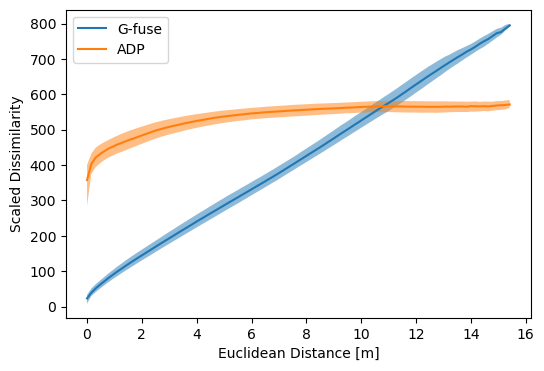
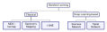
Channel Charting is essentially a special case of manifold learning, where we try to find a low-dimensional representation (physical coordinates) of the manifold of datapoints that lives in high-dimensional CSI space. There are multiple well-known manifold learning techniques, which can be categorized into two classes: Classical techniques and Deep Learning-based technqiues.
Both classes of techniques are suitable for Channel Charting, and can produce equally good channel charts. The advantage of deep learning-based Channel Charting is that it can easily process previously unseen datapoints (it's a parametric method), more on that later.
Time to generate the first channel chart! We will use the classical multidimensional scaling (MDS) manifold learning technique to produce it. MDS optimizes the cost function \[ \min_{\{\mathbf{z}^{(l)}\}_{l=1}^L} \sum\nolimits_{i=1}^{L-1}\sum\nolimits_{j=i+1}^L \left(\mathbf D_{\mathrm{G-fuse}, i, j} - \lVert \mathbf{z}^{(i)} - \mathbf{z}^{(j)} \rVert_2 \right)^2 \] using gradient descent, where \( \mathbf z^{(l)} \in \mathbb R^2 \) are the locations of points in the channel chart (we always assume 2-dimensional channel charts). We only need to provide the dissimilarity matrix to get a chart, easy 🙂! If MDS is used in conjunction with a geodesic dissimilarity matrix, it is also known as Isomap. In our code, we will only plot every 10th datapoint in the Channel Chart (since MDS can be pretty slow). Also, we cap the number of gradient descent iterations at 80:
nth_reduction = 10
reduced_dissimilarity_matrix_geodesic = dissimilarity_matrix_geodesic[::nth_reduction, ::nth_reduction]
embedding_isomap = MDS(metric = True, dissimilarity = 'precomputed', max_iter = 80, normalized_stress = False)
proj_isomap = embedding_isomap.fit_transform(reduced_dissimilarity_matrix_geodesic)
plot_colorized(proj_isomap, groundtruth_positions[::nth_reduction], title = "Isomap Channel Chart")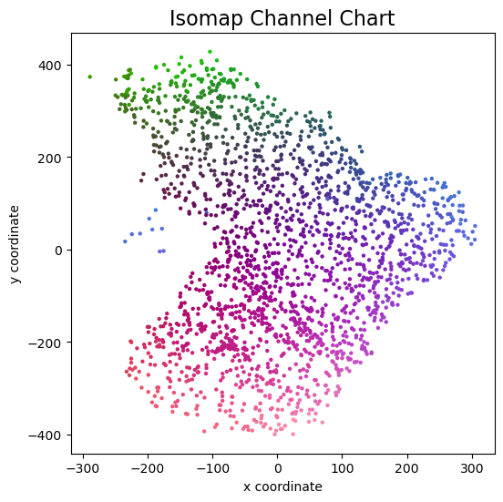
And this is the Channel Chart that we get! This already very much resembles the ground truth top view map from above, except for some arbitrary rotation / flipping and scaling of course.
But what if the base station now measures an additional datapoint and we want to localize the user on the channel chart, what would we have to do? This is the main downside of classical, so called non-parametric Channel Charting methods: We need to start the whole process from the very beginning, compute the dissimilarity of the new datapoint to all existing ones, re-run the shortest path algorithm and also re-run MDS. Obviously, this is unfeasible for practical applications.
The ability to map previously unseen CSI data to the channel chart is why deep learning-based Channel Charting is favored over classical methods.
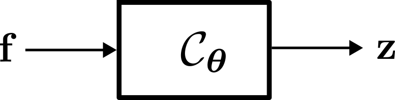
Regardless of the training method employed, the objective of neural network-based Channel Charting is to learn the so-called Forward Charting Function (FCF) \( \mathcal C_{\boldsymbol \theta} \). The FCF takes a feature vector \( \mathbf f \) as an input and directly outputs the position in the Channel Chart \( \mathbf z \). Once \( \mathcal C_{\boldsymbol \theta} \) has been found, this makes it very easy and efficient to infer additional Chart positions (unlike with MDS).
The \( \boldsymbol \theta \) in the subscript indicates that this function is parametrized by a parameter vector \( \boldsymbol \theta \), which contains the weights and biases of the neural network (hence, deep learning-based Channel Charting is parametric). The purpose of neural network training is to find suitable values for \( \boldsymbol \theta \).
In practical terms, we can implement the feature engineering stage as a Keras layer. This means we can actually feed \( \mathbf {\hat H}^{(l)} \) as an input to that layer, and the layer will blow this up to \( \mathbf{f}^{(l)} \). The computation of the sample autocorrelations can again be implemented using TensorFlow's einsum (with the advantage that feature engineering can be efficiently performed on the GPU).
class FeatureEngineeringLayer(tf.keras.layers.Layer):
def __init__(self):
super(FeatureEngineeringLayer, self).__init__(dtype = tf.complex64)
def call(self, csi):
# Compute sample autocorrelations for any combination of two antennas in the whole system
# for the same datapoint and time tap.
sample_autocorrelations = tf.einsum("damt,dbnt->dtabmn", csi, tf.math.conj(csi))
return tf.stack([tf.math.real(sample_autocorrelations), tf.math.imag(sample_autocorrelations)], axis = -1)Next, we can define the actual neural network that implements the FCF \( \mathcal C_{\boldsymbol \theta} \). There is really not that much to see here, it is just a dense network. We have a couple of hidden layers with ReLU activation, an output layer with linear activation and we use batch normalization.
array_count = np.shape(csi_time_domain)[1]
antenna_per_array_count = np.shape(csi_time_domain)[2]
tap_count = np.shape(csi_time_domain)[3]
cc_embmodel_input = tf.keras.Input(shape=(array_count, antenna_per_array_count, tap_count), name="input", dtype = tf.complex64)
cc_embmodel_output = FeatureEngineeringLayer()(cc_embmodel_input)
cc_embmodel_output = tf.keras.layers.Flatten()(cc_embmodel_output)
cc_embmodel_output = tf.keras.layers.Dense(1024, activation = "relu")(cc_embmodel_output)
cc_embmodel_output = tf.keras.layers.BatchNormalization()(cc_embmodel_output)
cc_embmodel_output = tf.keras.layers.Dense(512, activation = "relu")(cc_embmodel_output)
cc_embmodel_output = tf.keras.layers.BatchNormalization()(cc_embmodel_output)
cc_embmodel_output = tf.keras.layers.Dense(256, activation = "relu")(cc_embmodel_output)
cc_embmodel_output = tf.keras.layers.BatchNormalization()(cc_embmodel_output)
cc_embmodel_output = tf.keras.layers.Dense(128, activation = "relu")(cc_embmodel_output)
cc_embmodel_output = tf.keras.layers.BatchNormalization()(cc_embmodel_output)
cc_embmodel_output = tf.keras.layers.Dense(64, activation = "relu")(cc_embmodel_output)
cc_embmodel_output = tf.keras.layers.BatchNormalization()(cc_embmodel_output)
cc_embmodel_output = tf.keras.layers.Dense(2, activation = "linear")(cc_embmodel_output)
cc_embmodel = tf.keras.Model(inputs=cc_embmodel_input, outputs=cc_embmodel_output, name = "ForwardChartingFunction")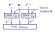
Remember, we can't train the FCF in a supervised manner, since we don't have ground truth information. However, we do have a dissimilarity matrix \( \mathbf D_\mathrm{G-fuse} \) and we could try to make the FCF map datapoints to the channel chart such that the channel chart positions conform to \( \mathbf D_\mathrm{G-fuse} \). This is exactly the idea of a Siamese Neural Network: Run the FCF twice on two different datapoint feature vectors \( f^{(i)} \) and \( f^{(j)} \), and tune (via backpropagation) the neural network based on how well the produced channel chart positions \( z^{(l)} \) and \( z^{(j)} \) match dissimilarity matrix.
This allows use to reuse the MDS cost function as a loss function for the Siamese neural network (where \( N \) is the size of the current batch): \[ \mathcal{L}_\mathrm{Siamese} = \frac{1}{N^2} \sum\nolimits_{i=1}^{N}\sum\nolimits_{j=1}^N \left(\mathbf D_{\mathrm{G-fuse}, i, j}-\Vert\mathbf{z}^{(i)}-\mathbf{z}^{(j)}\Vert_2\right)^2. \]
dissimilarity_margin = np.quantile(dissimilarity_matrix_geodesic, 0.01)
def siamese_loss(y_true, y_pred):
y_true = y_true[:,0]
pos_A, pos_B = (y_pred[:,:2], y_pred[:,2:])
distances_pred = tf.math.reduce_euclidean_norm(pos_A - pos_B, axis = 1)
return tf.reduce_mean(tf.square(distances_pred - y_true) / (y_true + dissimilarity_margin))input_A = tf.keras.layers.Input(shape = (array_count, antenna_per_array_count, tap_count,), dtype = tf.complex64)
input_B = tf.keras.layers.Input(shape = (array_count, antenna_per_array_count, tap_count,), dtype = tf.complex64)
embedding_A = cc_embmodel(input_A)
embedding_B = cc_embmodel(input_B)
output = tf.keras.layers.concatenate([embedding_A, embedding_B], axis=1)
model = tf.keras.models.Model([input_A, input_B], output, name = "SiameseNeuralNetwork")random_pair_dataset, which, as the name suggests, contains random pairs of datapoints from our dataset.
It is a good idea to implement this sample selection in a way that allows TensorFlow can optimize for maximum performance.
csi_time_domain_tensor = tf.constant(csi_time_domain)
dissimilarity_matrix_geodesic_tensor = tf.constant(dissimilarity_matrix_geodesic)
datapoint_count = tf.shape(csi_time_domain_tensor)[0].numpy()
random_integer_pairs_dataset = tf.data.Dataset.zip(tf.data.Dataset.random(), tf.data.Dataset.random())
@tf.function
def fill_pairs(randA, randB):
return (csi_time_domain_tensor[randA % datapoint_count], csi_time_domain_tensor[randB % datapoint_count]), dissimilarity_matrix_geodesic_tensor[randA % datapoint_count, randB % datapoint_count]
random_pair_dataset = random_integer_pairs_dataset.map(fill_pairs)optimizer = tf.keras.optimizers.Adam()
model.compile(loss = siamese_loss, optimizer = optimizer)
samples_per_session = 150000
learning_rates = [1e-2, 1e-2, 8e-3, 4e-3, 1e-3, 5e-4, 2e-4, 1e-4]
batch_size = [500, 1000, 1500, 2000, 3000, 4000, 5000, 6000]
for l in range(len(learning_rates)):
print("\nTraining Session ", l + 1, "\nBatch Size: ", batch_size[l], "\nLearning rate: ", learning_rates[l])
# Fit model
optimizer.learning_rate.assign(learning_rates[l])
steps_per_epoch = int(samples_per_session / batch_size[l])
model.fit(random_pair_dataset.batch(batch_size[l]).prefetch(tf.data.AUTOTUNE), steps_per_epoch = samples_per_session / batch_size[l])
# Plot Channel Chart
print("Running inference to plot channel chart")
channel_chart_positions = cc_embmodel.predict(csi_time_domain)
plot_colorized(channel_chart_positions, groundtruth_positions, title = "Siamese-Based Channel Chart - Session " + str(l + 1))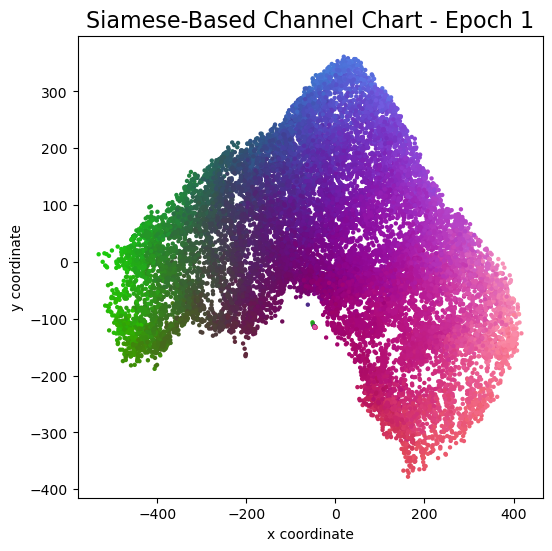
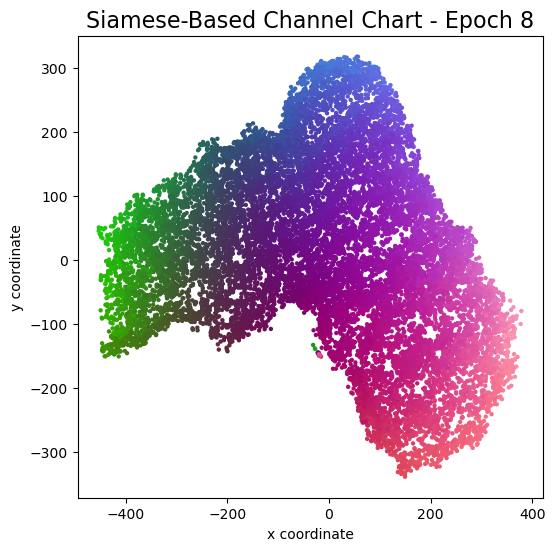
Channel charts like these ones should show up very soon. The L-shaped structure of the measurement area that is also visible in the top view of "ground truth" positions is clearly very well preserved here.
Actually, the Channel Chart that appears after the first training epoch is already pretty acceptable, the global structure is clearly visible.
As always, there is some unknown rotation / flipping / scaling between the channel chart and the true locations.
channel_chart_positions = cc_embmodel.predict(csi_time_domain)
def affine_transform_channel_chart(groundtruth_pos, channel_chart_pos):
pad = lambda x: np.hstack([x, np.ones((x.shape[0], 1))])
unpad = lambda x: x[:,:-1]
A, res, rank, s = np.linalg.lstsq(pad(channel_chart_pos), pad(groundtruth_pos), rcond = None)
transform = lambda x: unpad(np.dot(pad(x), A))
return transform(channel_chart_pos)
channel_chart_positions_transformed = affine_transform_channel_chart(groundtruth_positions, channel_chart_positions)
plot_colorized(groundtruth_positions, groundtruth_positions, title = "Ground Truth Positions")
plot_colorized(channel_chart_positions_transformed, groundtruth_positions, title = "Channel Chart After Affine Transform")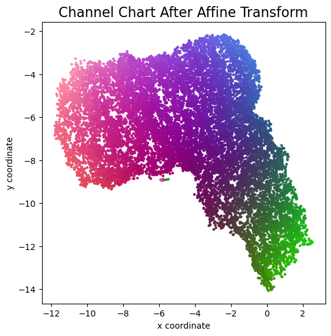
errorvectors = groundtruth_positions - channel_chart_positions_transformed
errors = np.sqrt(errorvectors[:,0]**2 + errorvectors[:,1]**2)
mae = np.mean(errors)
nth_errorvector = 15
plot_colorized(channel_chart_positions_transformed, groundtruth_positions, title = "Error Vectors, MAE = " + str(mae) + "m", show = False, alpha = 0.3)
plt.quiver(channel_chart_positions_transformed[::nth_errorvector, 0], channel_chart_positions_transformed[::nth_errorvector, 1], errorvectors[::nth_errorvector, 0], errorvectors[::nth_errorvector, 1], color = "black", angles = "xy", scale_units = "xy", scale = 1)
plt.show()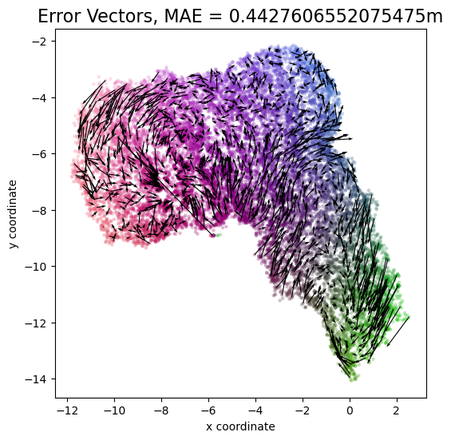
count, bins_count = np.histogram(errors, bins=200)
pdf = count / sum(count)
cdf = np.cumsum(pdf)
bins_count[0] = 0
cdf = np.append([0], cdf)
plt.figure(figsize=(5, 4))
plt.plot(bins_count, cdf)
plt.xlim((0, 2))
plt.xlabel("Absolute Localization Error [m]")
plt.ylabel("CDF")
plt.grid()
plt.show()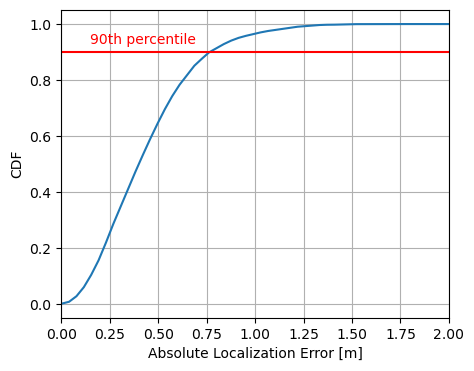
Last, but not least: If you read the whole tutorial all the way to the end, then you have certainly realized that Channel Charting technology means that the massive MIMO base station will know the location of the users in a much more fine-grained manner than is possible with today's base stations and their sector antennas. In my experience, Channel Charting researchers are very aware of the potential privacy implications. There are some very obvious benefits attached to Channel Charting (outlined in the introduction), but there is also potential for abuse. With all the skepticism about 5G and mobile networks in general, we believe it is important to transparently publish and discuss the advantages and risks of this technology.
All our datasets are licensed under the CC-BY license, i.e., you are free to use them for whatever you like as long as you reference us in your publications. All code in this tutorial is CC0-licensed. This tutorial was written by Florian Euchner, with contributions by Chae Eun Lee and Phillip Stephan.